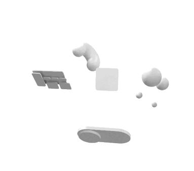

Juhan Kim
Intro
#8년차 #UX/UI #디자인 #구로구
×
Intro
About
Contact
Archive
Blog
Update
모바일앱 프로젝트
바로가기
Juhan Kim
현재 재직중 | Product Designer

맞춤 탐색
필요한 키워드만 선택하여 탐색합니다.
직접 탐색
최신순 전체보기로 탐색합니다.
# Mobile App
# Web/Service
# Strategy
# Tablet
# Animation(lottie)
# Unity
# Video Works
# Graphic
# Admin
# Released
# 3D Modeling
# Game
이전 화면으로 돌아가기
처음 탐색 방법 선택 화면으로 돌아갑니다.
탐색하기
선택된 태그로 아카이브를 탐색합니다.